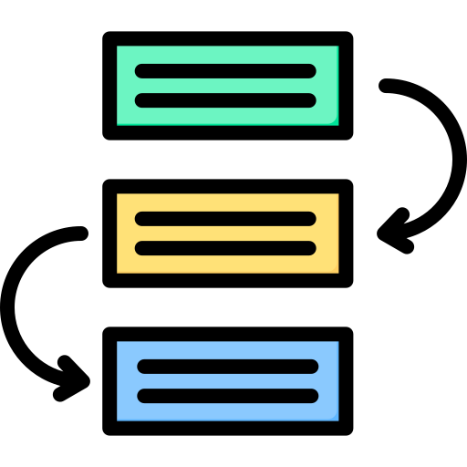

La propuesta la desarrollaremos en tres fases:
Realizaremos un primera fase inicial donde situaremos al alumnado. En ella intentaremos motivar, implicarle en el proceso de aprendizaje, ponerle en situación, activar conocimientos o ideas previas y organizar la estructura de trabajo.
En la segunda fase, fase de desarrollo, de conocer, comprender, pensar, practicar y actuar, llevamos a cabo actividades de Conocer y comprender seguidas de actividades de Piensa, practica y actúa.
Y finalmente, en la fase de síntesis o cierre: Compartir, evaluar y reflexionar sobre nuestros logros y competencias, daremos difusión al producto elaborado, evaluaremos lo aprendido, reflexionaremos sobre el proceso y los logros conseguidos, pondremos a prueba las competencias adquiridas.

Icon by Uniconlabs